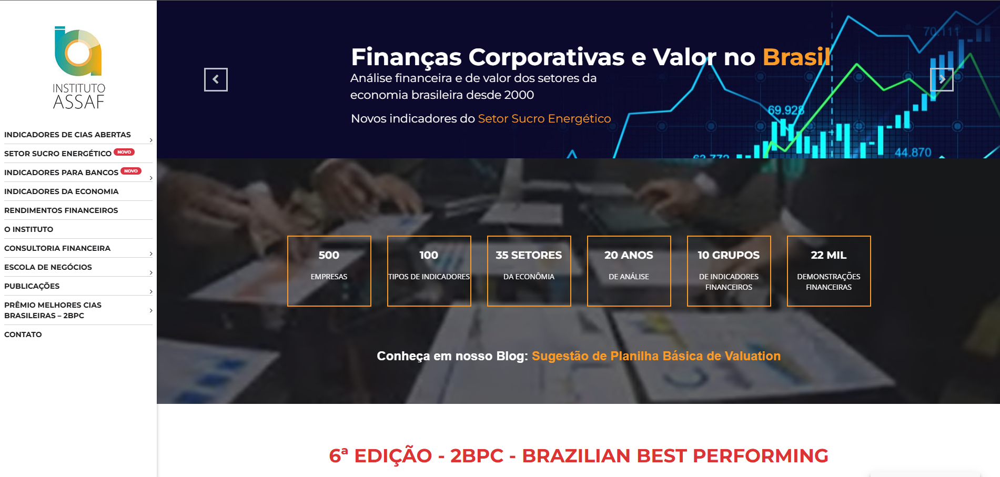
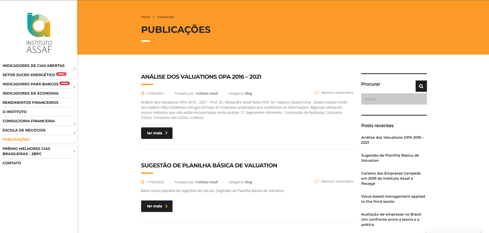

Instituto Assaf
Desenvolvimento de plataforma educacional para instituto de formação financeira com área de membros e conteúdo exclusivo.
Visão Geral do Projeto
O Instituto Assaf é uma renomada instituição de educação financeira fundada pelo professor e analista de mercado Alexandre Assaf Neto. O instituto precisava de uma plataforma digital robusta para oferecer cursos online, disponibilizar materiais exclusivos para alunos e criar uma comunidade de aprendizado em finanças e investimentos. O objetivo era transformar o vasto conhecimento e metodologia do instituto em uma experiência digital acessível e eficaz.
Desafios e Objetivos
O principal desafio era criar uma plataforma que atendesse a diferentes perfis de usuários, desde estudantes iniciantes até profissionais experientes do mercado financeiro. A solução precisava combinar rigor acadêmico com usabilidade intuitiva, além de oferecer recursos avançados de aprendizado como simuladores financeiros, calculadoras e ferramentas de análise.
Os objetivos específicos incluíam desenvolver um sistema de gerenciamento de aprendizado (LMS) personalizado, implementar uma área de membros com diferentes níveis de acesso, criar um sistema de pagamento e assinaturas integrado, e estabelecer métricas de acompanhamento do progresso dos alunos.
Pesquisa e Planejamento
Iniciamos o projeto com uma fase intensiva de pesquisa, incluindo entrevistas com alunos existentes dos cursos presenciais, análise de plataformas educacionais concorrentes e workshops com a equipe pedagógica do instituto. Mapeamos a jornada de aprendizado ideal e identificamos os principais pontos de contato onde a tecnologia poderia potencializar a experiência educacional.
Com base nos insights coletados, desenvolvemos um plano de arquitetura de informação e fluxos de usuário detalhados, priorizando a clareza na navegação e a facilidade de acesso aos diferentes tipos de conteúdo educacional.
Design e Experiência do Usuário
O design da plataforma foi desenvolvido com foco na legibilidade e concentração, elementos essenciais para o aprendizado eficaz. Utilizamos uma paleta de cores sóbria com acentos estratégicos para destacar informações importantes, e uma tipografia otimizada para leitura prolongada em telas.
A experiência do usuário foi estruturada em módulos intuitivos: Dashboard personalizado com progresso e recomendações, Biblioteca de cursos com sistema avançado de filtros, Área de estudo com ferramentas de anotação e marcação, Comunidade para discussões e networking, e Centro de recursos com materiais complementares e ferramentas práticas.
Desenvolvimento e Tecnologias
Desenvolvemos uma solução personalizada baseada em WordPress com LMS integrado, utilizando PHP, MySQL, JavaScript e React para componentes interativos. A arquitetura foi projetada para ser escalável e permitir a adição contínua de novos cursos e funcionalidades sem comprometer a performance.
Implementamos recursos avançados como player de vídeo com marcadores e notas, sistema de avaliação adaptativa, ferramentas interativas de cálculo financeiro, e integração com plataformas de pagamento para gerenciamento de assinaturas e compras únicas. Também desenvolvemos um painel administrativo personalizado para a equipe do instituto gerenciar conteúdos, alunos e métricas de engajamento.
Recursos Educacionais Interativos
Um diferencial importante da plataforma foi o desenvolvimento de ferramentas educacionais interativas específicas para o ensino de finanças. Criamos simuladores de investimento, calculadoras de valor presente e futuro, visualizadores de fluxo de caixa e outros recursos que permitem aos alunos aplicar na prática os conceitos aprendidos.
Esses recursos foram desenvolvidos com JavaScript e bibliotecas como D3.js para visualização de dados, permitindo que conceitos complexos fossem apresentados de forma visual e interativa, facilitando a compreensão e retenção do conhecimento.
Resultados e Impacto
Nos primeiros seis meses após o lançamento, a plataforma do Instituto Assaf registrou mais de 3.000 alunos ativos, com uma taxa de conclusão de cursos 40% superior à média do setor de educação online. A taxa de renovação de assinaturas atingiu 85%, indicando alto nível de satisfação com o conteúdo e a experiência de aprendizado.
O tempo médio de estudo semanal por aluno foi de 4,2 horas, significativamente acima da média de plataformas similares. Os fóruns de discussão e a área de comunidade registraram alto engajamento, com mais de 70% dos alunos participando ativamente das discussões e compartilhamento de conhecimento.
A plataforma também permitiu que o Instituto Assaf expandisse seu alcance geográfico, atendendo alunos de todas as regiões do Brasil e alguns países de língua portuguesa, consolidando sua posição como referência em educação financeira no mercado brasileiro.